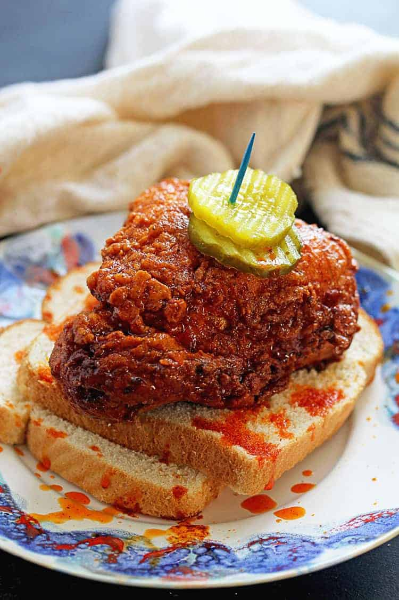

Nashville Hot Chicken

Nashville Hot Chicken is one of my favorite dishes to make. It's
incredibly simple and filling, with kids and adults alike
able to enjoy the flavor (if they like spice!!)
Are you ready to dig in?
Ingredients
- Chicken
- Brown sugar (heaping scoop)
- Cayenne Pepper (heaping scoop)
- Paprika, Garlic powder, Salt, Pepper
- Flour
- Eggs
Steps
- Heat some peanut oil to 375 degrees
- Season some flour with salt, pepper, paprika, and garlic powder
- Toss the chicken in the flour mixture, transfer to the egg, and transfer
back into the flour mixture, pressing in the flour. Set chicken aside
- Carefully add the chicken into the oil, making sure not to overcrowd the pot
- While the chicken is frying, get a separate bowl and add in the brown sugar and cayenne pepper.
It should be equal parts, along with the other seasonings that you wish to add.
- Take some oil out of pot that is cooking and add it to the brown sugar/cayenne pepper
mixture. Keep stirring until you get a smooth consistency.
- Once chicken is done cooking, transfer to a metal bowl and toss it with the Nashville
hot sauce. Enjoy!